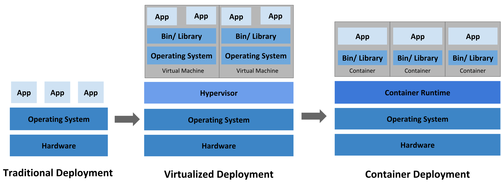
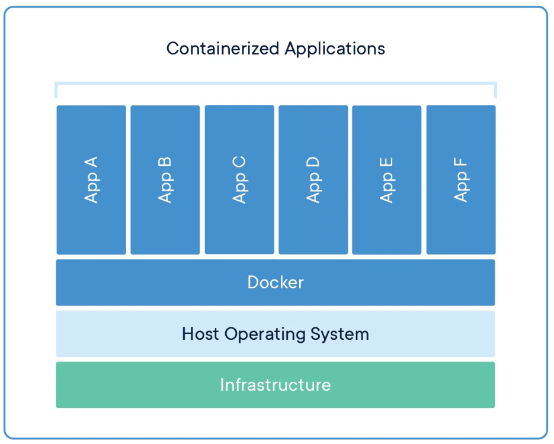
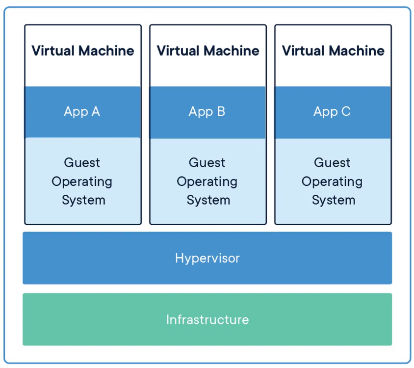

section_01_container
목차
컨테이너를 배워야하는 이유
왜 굳이 리눅스에서 돌리는지
그냥 프로그램과 컨테이너의 차이
그래서 왜 쓸까?
컨테이너 역사와 미래에 대한 기사 도커 컨테이너 Doc 컨테이너 고려사항
왜 컨테이너를 배워야 할까?

- 기존 배포 시대(Traditional Deployment)
기업들은 초기에 응용 프로그램을 물리적 서버에서 실행했습니다.
물리적 서버에서 응용 프로그램에 대한 리소스 경계를 정의할 방법이 없었기 때문에 이는 리소스 할당 문제를 일으킵니다.
예를 들어, 여러 응용 프로그램이 한 대의 물리적 서버에서 실행된다면, 한 응용 프로글매이 대부분의 리소스를 사용하여 다른 응용프로그램이 성능 저하를 겪을 수 있습니다.
해결책 은 각 응용 프로그램을 별도의 물리적 서버에서 실행하는 방법입니다.
단점 은 리소스 낭비와 많은 물리적 서버를 유지하는 비용으로 인해 확장이 어렵습니다.- 가상화 배포 시대(Virtualized Deployment)
가상화 기술을 사용하여 해결하였습니다.
이를 통해 하나의 물리적 서버의 CPU에서 여러 가상 머신(VM)을 실행할 수 있습니다. 가상화를 통해 응용 프로그램은 VM 간에 격리되고 다른 응용 프로그램에서 한 응용 프로그램의 정보에 자유롭게 접근할 수 없는 수준의 보안을 제공합니다.
가상화를 통해 물리적 서버의 자원을 더 잘 활용할 수 있으며, 응용 프로그램을 쉽게 추가하거나 업데이트하여 더 나은 확장성을 제공합니다.
하드웨어 비용을 줄일 수 있고, 가상화를 사용하면 일련의 물리적 자원을 일회용 가산 머신 클러스터로 제공할 수 있습니다.
각 VM은 가상화된 하드웨어 위에 자체 운영 체제를 포함한 모든 구성 요소를 실행하는 완전한 기계입니다.- 컨테이너 배포 시대(Container deployment)
컨테이너는 가상머신과 유사하지만, 응용 프로그램 사이에서 운영 체제를 공유하는 느슨한 격리 속성 을 가지므로 가볍습니다.
가상 머신(VM)과 유사한 파일 시스템,CPU 및 메모리 할당, 프로세스 공간을 가지고 있습니다.
그들은 기반이 되는 인프라에서 분리가 되어있기 때문에 클라우드와 운영체제 배포간에 이동성이 있습니다.
즉, 컨테이너 엔진만 설치되어있으면 어디서든지 동일한 환경으로 실행이 될 수 있습니다.
정리하면, 하드웨어 기술의 발전과 빠른 확장성, 이식성을 요구하는 시대에는 물리적 서버 배포는 한계가 명확합니다. VM기술과 컨테이너 기술을 사용하여 확장을 할 수 있지만, 고객의 니즈를 만족하는 기능을 빠르게 배포하고 수정하기는 DevOps환경에서는 컨테이너가 적합하기에 배워야합니다.
컨테이너란 ?
- 하익스가 파이콘에서 설명한 것은 컨테이너는
독립형 소프트웨어 단위 (self-contained units of software)로서 서버로부터 서버, 노트북으로부터 EC2, 베어-메탈 자이언트 서버로 전달될 수 있다. 그리고 이는 프로세스 수준에서 격리되어 있기 때문에 동일한 방식으로 실행되고 자체 파일 시스템을 갖는다.
컨테이너는 코드와 그에 필요한 모든 종속성을 패키징 하여 응용 프로그램이 다른 컴퓨팅 환경에서도 빠르고 신뢰성 있게 실행될 수 있도록 하는 소프트웨어의 표준 단위입니다. Docker 컨테이너 이미지는 코드,런타임,시스템 도구,시스템 라이브러리(lib) 및 설정을 포함하는 가벼운, 독립적인 실행 가능한 소프트웨어 패키지입니다.
컨테이너 이미지는 Runtime에 컨테이너가 되며, Docker 컨테이너의 경우 Docker 엔진에서 실행될 때 이미지가 컨테이너로 변환됩니다. 리눅스 및 윈도우 기반 애플리케이션에서 모두에서 사용 가능한 컨테이너화된 소프트웨어는 인프라의 차이에 상관없이 항상 동일하게 실행됩니다.
컨테이너는 소프트웨어의 환경으로부터 격리 시켜 개발과 스테이징 사이의 차이와 관계없이 일관되게 작동하도록 보장합니다.
리눅스에서 컨테이너 기술을 사용하는 이유
- 네임 스페이스(Namespaec)
컨테이너는 리눅스의 네임스페이스를 활용하여 자원(리소스)을 격리합니다.
네임스페이스는 프로세스 그룹 간에 리소스를 격리하는 기능을 제공합니다
예를 들어, 각 컨테이너는 자체PID(프로세스 식별자), 네트워크, 마운트 포인트, 유저, 그룹 등의 네임스페이스를 가지고 있어 서로 완전한 격리된 환경(소프트웨어,리소스)를 제공합니다.- 컨트롤 그룹(Control Group) - cgroup
컨크롤 그룹은 리눅스 커널 기능 중 하나로, 리소스 그룹에 대한 제한,우선 순위, 모니터링 등의 기능을 제공합니다.
컨테이너는 컨트롤 그룹을 사용하여 CPU, 메모리, 디스크 I/O, 네트워크 대역폭 등의 자원을 제한하고 관리하여 컨호스트 시스템의 자원을 효율적으로 활용할 수 있습니다.- 컨테이너 루트(croot)
컨테이너 내부에서 사용되는 파일 시스템의 루트 디렉토리를 가르킵니다. 이 디렉토리는 컨테이너가 실행되는 호스트 시스템의 파일 시스템과 분리되어 있으며, 컨테이너 내부의 파일과 디렉토리는 이 croot 디렉토리를 기준으로 관리됩니다.
croot는 네임스페이스와 컨트롤 그룹과 함께 컨케이너의 격리 수준을 보장하고 호스트 시스템과 상호작용을 제한하는데 중요한 역할을 합니다.croot를 통해 컨테이너는 자체적으로 필요한 파일 시스템을 구성하고 실행되는 동안 완전히 격리된 환경을유지할 수 있습니다.
VM과 컨테이너 차이

- 컨테이너
컨테이너는 코드와 종속성(의존 라이브러리)을 함께 패키지하는 앱 계층의 추상화입니다.
여러 컨테이너가 동일한 시스템에서 실행될 수 있으며OS 커널을 다른 컨테이너와 공유할 수 있습니다.
각 컨테이너는 사용자 공간에서 격리된 프로세스로 실행됩니다. 컨테이너는 VM보다 공간을 덜 차지하며 더 많은 애플리케이션을 처리할 수 있습니다

- 가상머신
VM(가상머신)은 하나의 서버를 여러 서버로 바꾸는 물리적 하드웨어의 추상화입니다. 하이버바이저를 사용하면 단일 시스템에서 여러 VM을 실행할 수 있습니다.
각 VM에는 운영체제, 애플리케이션, 필수 바이너리 및 라이브러리의 전체 복사본이 포함되어있으며 수십 GB를 차지합니다. VM의 부팅 속도도 느려질 수 있습니다.
컨테이너 고려사항
- 복잡성
여러 환경에서 컨테이너를 실행하는 것은 복잡성을 증가시킵니다. 다른 환경에서의 네트워킹 구성 및 관리는 각기 다른 요구 사항과 정책을 가질 수 있으며, 이를 일관되게 관리하는 것은 어려울 수 있습니다.
- 동적 확장성
컨테이너 기반 환경에서의 네트워킹은 동적이며 높은 확장성을 가지고 있습니다. 이러한 동적 환경에서 설정이 자주 변경되므로 관리 및 모니터링에 어려움이 있을 수 있습니다.
- 마이크로서비스 통신
컨테이너 내의 다양한 마이크로서비스 간의 통신은 복잡할 수 있습니다. 내부 서비스 간의 통신, 외부 서비스와의 통신 등 다양한 요구 사항을 만족하기 위해 유연한 네트워킹 솔루션이 필요합니다.
- 다중 환경
여러 환경에서 컨테이너를 실행하는 것은 네트워킹을 관리하는 데 추가적인 어려움을 줄 수 있습니다. 각 환경은 고유한 네트워킹 정책을 가지고 있으며, 이를 통합하고 일관되게 관리하는 것은 도전적일 수 있습니다.
- 보안
컨테이너 환경에서의 네트워킹은 보안 측면에서도 도전적일 수 있습니다. 동적인 환경에서 보안 정책을 관리하고, 암호화폐 채굴과 같은 런타임 보안 위험에 대응하는 것이 필요합니다.
- 가시성 및 모니터링
다중 플랫폼에서 실행되는 다중 애플리케이션의 네트워킹을 모니터링하고 관리하는 것은 복잡할 수 있습니다. 다양한 IP 주소 및 컨테이너 상태를 추적하고 모니터링하기 위해 효율적인 도구 및 솔루션이 필요합니다.